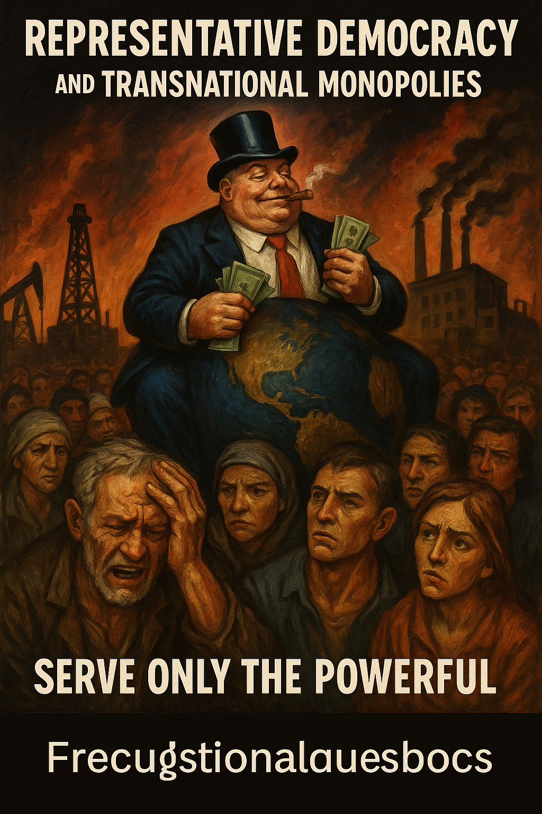

Publicado em 2025-04-30 19:04:30
Vivemos num planeta onde a palavra “democracia” é usada como senha de entrada para o circo do poder.
Mas a verdade é que as democracias representativas já não representam os povos.
Servem antes os donos do tabuleiro — os monopólios transnacionais, os fundos especulativos, os conglomerados que mandam nos dados, nos alimentos, na energia, na informação e, claro, nas decisões.
O parlamento? Um palco de bonecos articulados.
Os governos? Agências regionais de gestão do capital global.
As eleições? Rituais anestésicos de validação de um sistema que já não responde aos cidadãos.
O cidadão moderno continua a votar,
mas já não decide.
Continua a pagar impostos,
mas já não beneficia.
Continua a viver,
mas já não governa nada do que o rodeia.
As democracias representativas converteram-se em instrumentos de captura do Estado por interesses privados — e os seus representantes são geridos como ativos de marketing: falam bonito, prometem tudo, entregam nada.
Enquanto isso, os povos estão exaustos, pobres, divididos e desiludidos.
A maioria sobrevive entre salários indignos, rendas incomportáveis, filas nos hospitais e escolas em ruínas.
Mas os lucros das grandes empresas batem recordes.
As bolsas celebram.
E os políticos aplaudem — entre jantaradas com banqueiros e fotos em Davos.
É o triunfo do absurdo.
Do “progresso” que deixa milhões para trás.
Da liberdade de mercado que escraviza.
Da “governação democrática” que ignora os próprios governados.
A democracia representativa não está doente.
Está capturada.
Está rendida.
Está morta para os povos — viva apenas para os seus donos.
É tempo de dizer basta.
É tempo de reivindicar uma democracia real, direta, participativa, livre de partidos-monopólio, onde o cidadão volte a ser soberano.
Ou fazemos isso —
ou seremos apenas mais um exército de descartáveis num planeta privatizado.
Francisco Gonçalves
(Fragmentos do Caos)
Créditos para IA, DeepSeek e ChatGPT, (c)
Imagens cortesia de OpenAI (c)